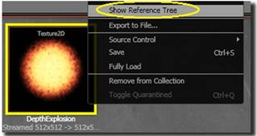

UDN
Search public documentation:
ReferenceTreeToolCH
English Translation
日本語訳
한국어
Interested in the Unreal Engine?
Visit the Unreal Technology site.
Looking for jobs and company info?
Check out the Epic games site.
Questions about support via UDN?
Contact the UDN Staff
日本語訳
한국어
Interested in the Unreal Engine?
Visit the Unreal Technology site.
Looking for jobs and company info?
Check out the Epic games site.
Questions about support via UDN?
Contact the UDN Staff
引用树工具
概述
 前一个图片是一个简单的示例，根据您的关卡的不同实际的结果可能非常复杂。 这里是一个更加复杂的树，贴图有很多到达actors不同路径。
前一个图片是一个简单的示例，根据您的关卡的不同实际的结果可能非常复杂。 这里是一个更加复杂的树，贴图有很多到达actors不同路径。

使用引用树

初次加载引用树对话框时根据您的游戏的复杂度以及您所具有的对象数量的不同可能会花几秒钟的时间。 在内部，为了找到完整的引用列表，引用树构建了包含所有对象的图表。 所以这会花费一些时间。 一旦打开对话框后，搜索新的资源的速度是非常快的。 对话框将位于编辑器主框的顶部，并且不会阻挡其它工作的进行。 当打开对话框后，为了进行新的搜索，可以简单地右击内容浏览器中的任何对象并选择"Show Reference Tree(显示引用树)"或者从内容浏览器中拖拽一个资源并把它放到引用树对话框中。选项
View Menu(视图模式)
- Rebuild Tree（重新构建树）: 这将会重新构建树并检查所有加载的对象。 这个过程可能会花一些时间，但是如果正在被检查的资源的引用已经发生了变化时这是有用的。
- Expand All(展开所有): 展开树中的所有节点。
- Collapse All(合并所有): 合并树中的所有节点。
Options Menu(选项菜单)
- Show Script References(显示脚本引用) 默认情况下，不显示脚本中对资源的引用。 为了显示它们，您可以选中这个选项。
关联菜单
您可以右击树中的项。 如果您右击一个actor，您将会获得这个菜单：- Select Actor(选择Actor): 在透视窗口中选择并聚焦该actor。注意： 双击引用树中的actor也会获得这个效果。
- View Properties(查看属性): 查看actor的属性窗口。
- Show in Content Browser(在内容浏览器中显示): 同步内容浏览器到选中的资源。 注意： 在引用树中双击那个资源也会获得这个效果。
- Open Editor(打开编辑器): 打开针对您点击的资源的特定编辑器。 比如，当在骨架网格物体上实施这个操作时将会显示动画集查看器。
注意
- 引用树工具仅显示可浏览的对象或actors。
- 由于树的性能原因，在树的每个叶子节点中仅显示前100项。 如果叶子节点所具有的项多于100，那么将会添加一个节点说明那个叶子节点共具有多少项。
- 目前这个工具正在开发过程中。